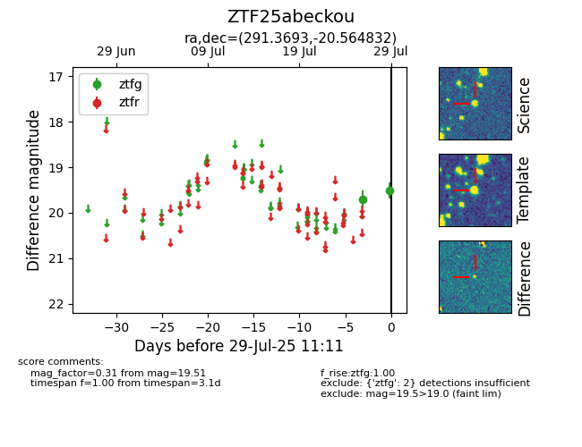

Target ZTF25abeckou at 2025-07-29 11:11, see:
FINK: fink-portal.org/ZTF25abeckou
Lasair: lasair-ztf.lsst.ac.uk/objects/ZTF25abeckou
ALeRCE: alerce.online/object/ZTF25abeckou
alt names
ZTF25abeckou (ztf,fink)
coordinates:
equatorial (ra, dec) = (291.3693,-20.56483)
galactic (l, b) = (17.8549,-16.46795)
photometry
last ztfg=19.51
2 ztfg detections
